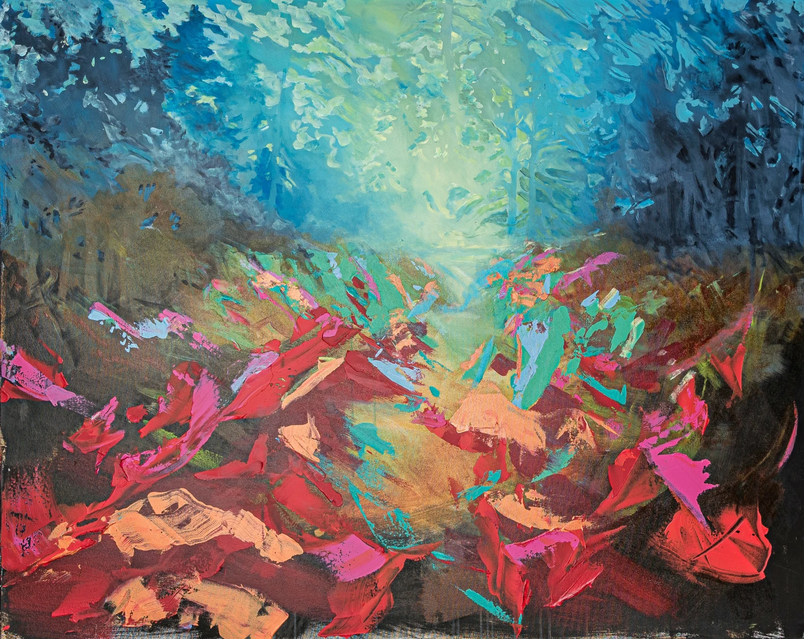
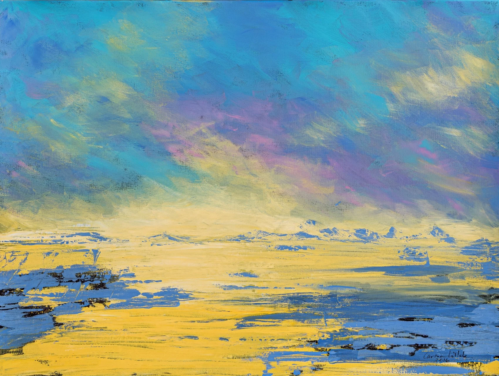
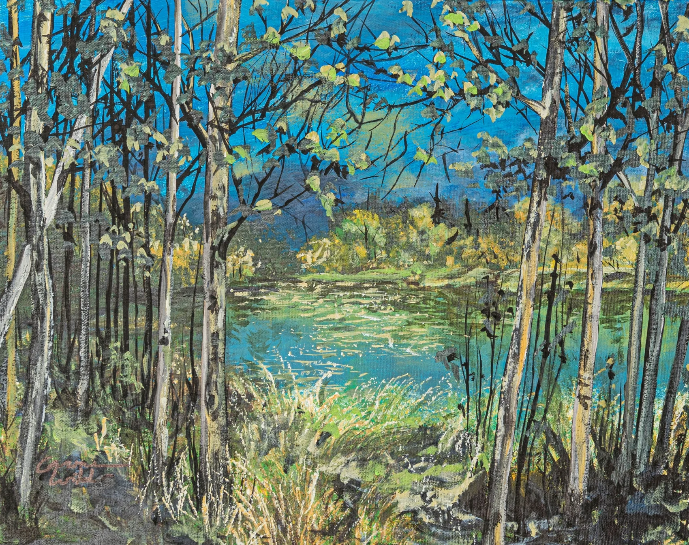

Canadian landscape artist · Edmonton, Alberta
Into the Wilde.
Vivid landscapes for the places we go to feel alive. Original fine art inspired by Canada's wild beauty.
Explore original art
For the moments in nature that stay with you long after you leave.
Original art, made in EdmontonA glimpse into the collectionWhere the wild
View portfolio ↗Where the wild
takes us.

Meet the artistA little closer
A little closer
to nature.
Carmen Wilde is an Edmonton-based landscape artist drawn to the lakes, forests, fields, mountains, trails and coastlines of Canada. Her vivid paintings capture the discovery, tranquility and mystery of being in the wild.
More about Carmen ↗

Made just for youA place. A memory.
A place. A memory.
Your story.
Turn a meaningful photograph or place into a one-of-a-kind original painting. Carmen creates custom acrylic works in collaboration with you.
Explore commissions